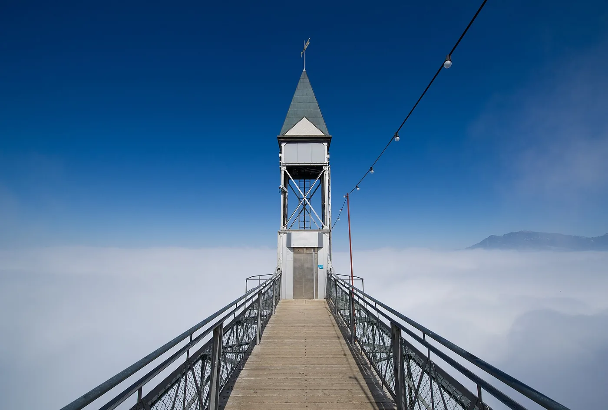

Outbound · TG930
BKKกรุงเทพฯ สุวรรณภูมิ
CDGปารีส · อาคาร 1
Dateศ. 18 ธ.ค.
Depart00:05
Arrive06:50
Aircraft777-300ER

ทริป Softever Around The World 2026 ที่ฝรั่งเศสและสวิตเซอร์แลนด์ ตอบข้อความได้ช่วงสั้น ๆ ในวันทำการ และกลับมาทำงานตามปกติวันจันทร์ที่ 4 มกราคม
สรุปตามหัวข้อแผนการท่องเที่ยวของสวัสดิการ วันเดินทาง ประเทศและเมือง ผู้ติดตาม และวันหยุดที่ใช้
บินตรงทั้งขาไปและขากลับกับการบินไทย ขาไปเข้าปารีส ขากลับออกจากซูริก
เวลาท้องถิ่นของสนามบินต้นทางและปลายทาง · ยุโรปช้ากว่าไทย 6 ชั่วโมง
สองประเทศ สี่เมือง สิบสองคืน ระหว่างทางเดินทางด้วยรถไฟทั้งหมด
ที่พักเมืองละแห่ง อยู่ใกล้สถานีรถไฟหรือเมืองเก่า เดินเที่ยวได้สะดวก

ทริปเดี่ยวช่วงคริสต์มาส อยู่เมืองละหลายคืนเพื่อเดินเที่ยวแบบไม่เร่ง เช้าวันทำการเปิดดูงานก่อนออกเดินทาง แล้วใช้เวลาที่เหลือกับพิพิธภัณฑ์ ตลาดคริสต์มาส และเทือกเขาแอลป์
แสดงวันทำงาน วันลา วันเดินทาง และวันหยุด แตะวันที่เพื่อดูว่าอยู่เมืองไหนและติดต่อได้กี่โมง
เวลาประเทศไทย · ยุโรปช้ากว่าไทย 6 ชั่วโมง (08:00 ที่ยุโรป = 14:00 ที่ไทย)
แต่ละเมืองมีแผนที่และหมุดตามสถานที่ ทุกวันมีอุณหภูมิโดยประมาณ ช่วงที่ติดต่อได้ และจุดถ่าย Photo of the Day
กิจกรรมระหว่างทริปตามประกาศสวัสดิการ
เลือกรูปที่ชอบที่สุดวันละ 1 รูป ส่งในกลุ่ม Telegram ของบริษัททุกวันระหว่างทริป จุดถ่ายที่วางไว้อยู่ในแผนรายวัน
จบทริปเลือก 1 รูปที่ดีที่สุดของทั้งทริป เป็นรูปถ่ายเองที่สถานที่จริง ส่งหลังกลับถึงกรุงเทพฯ
ซื้อแม่เหล็กหรือพวงกุญแจขนาดเล็ก กลับมาติดบนแผนที่โลกที่ออฟฟิศ
ส่งทาง Slack พร้อมสรุปสั้น ๆ ว่าต้องการให้ตัดสินใจหรือช่วยเรื่องอะไร จะตอบในช่วง 13:00–14:30 ของวันทำการ
เก็บไว้คุยหลังวันที่ 4 มกราคม หรือส่งอีเมลไว้ก่อน จะไล่อ่านทั้งหมดในวันแรกที่กลับมา
เสาร์–อาทิตย์ระหว่างทริป ช่วงที่อยู่บนเครื่องบิน และวันที่ 31 ธันวาคม ถึง 3 มกราคม